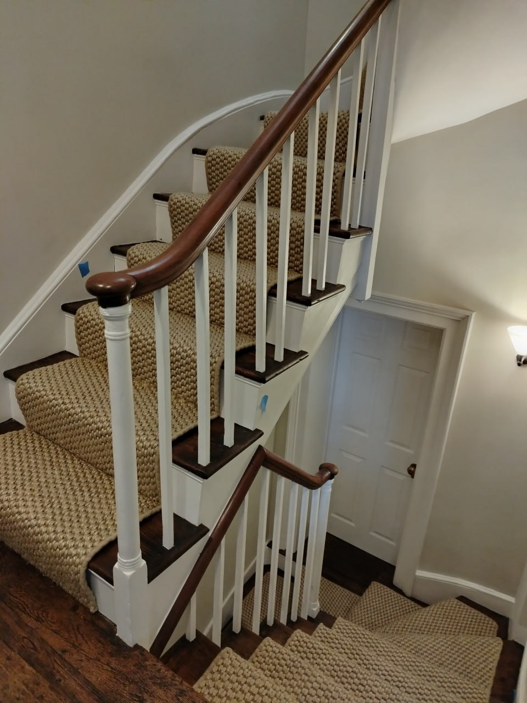
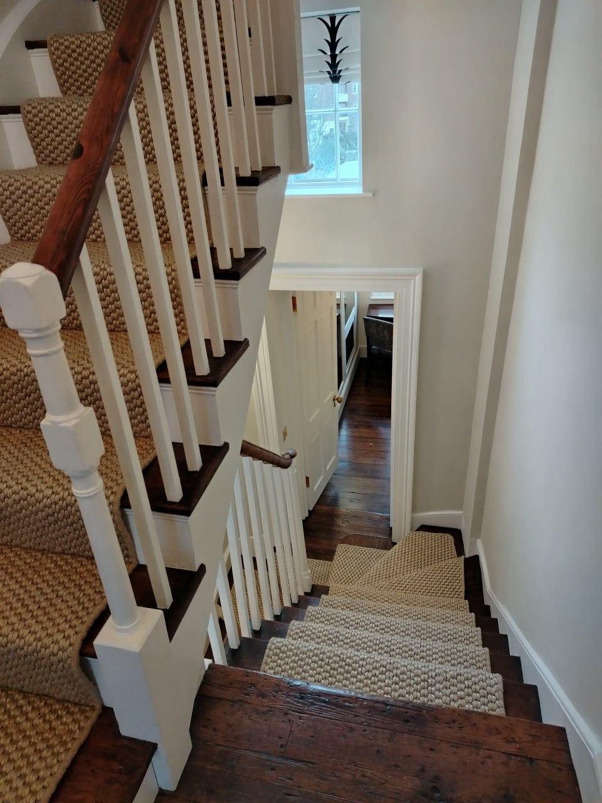
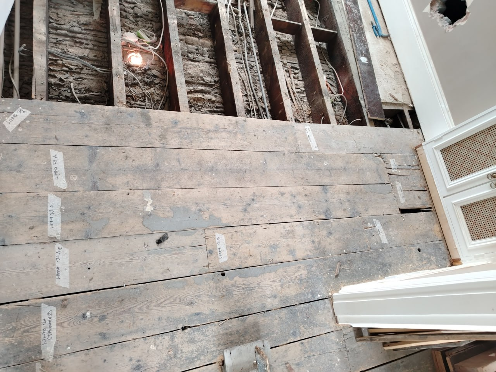
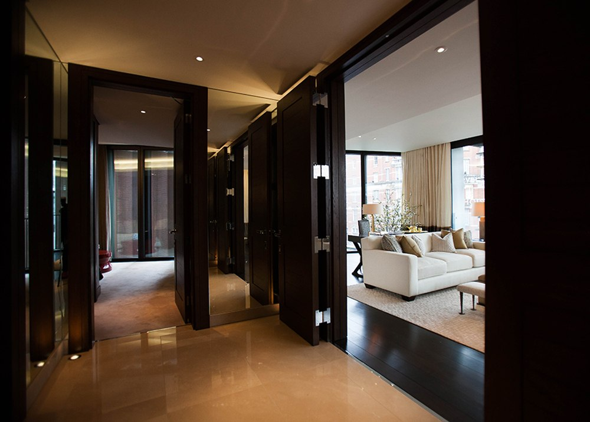
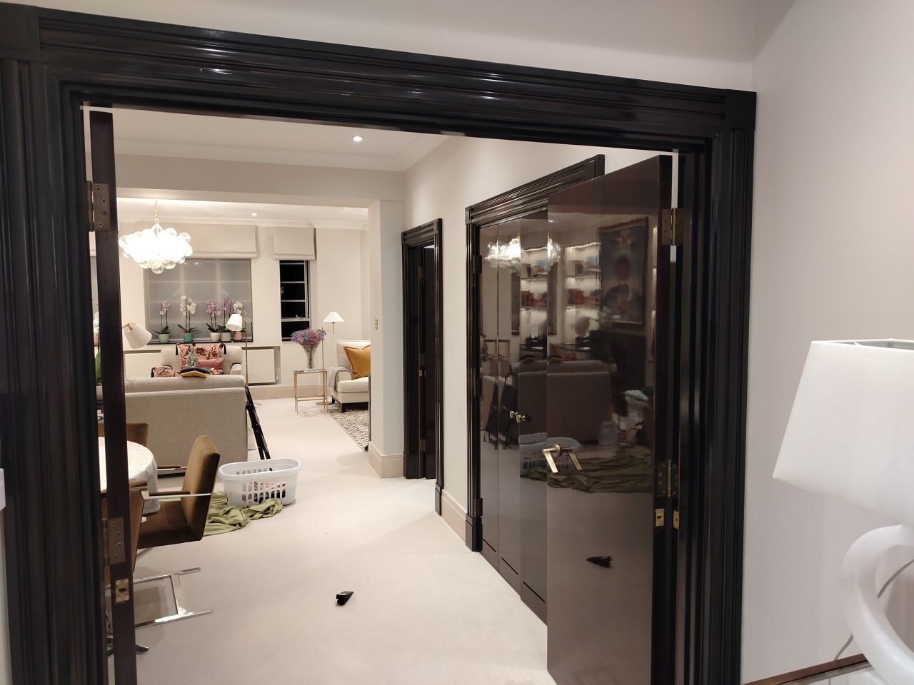
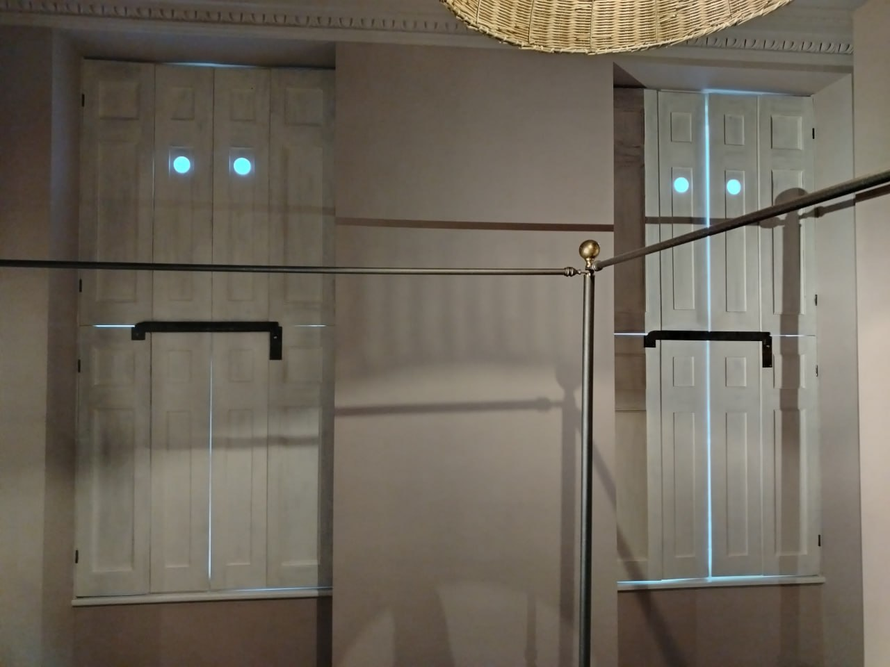
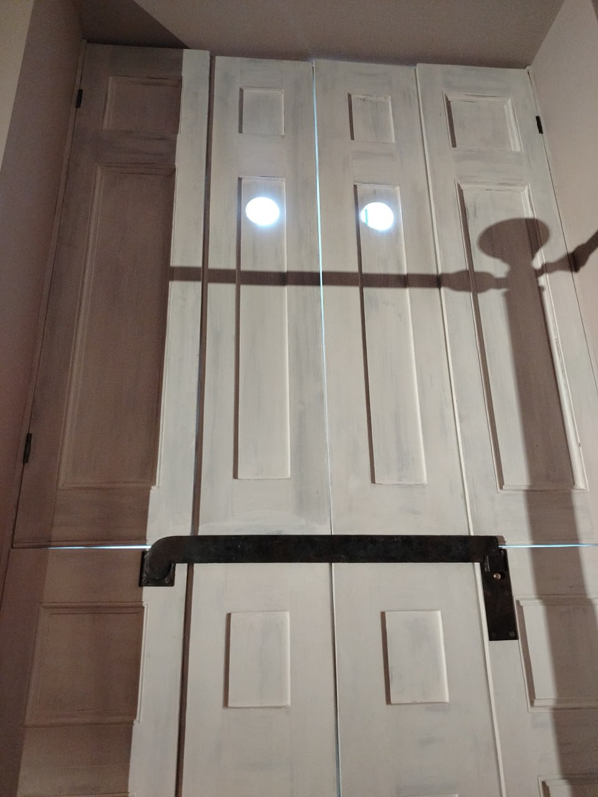

Antique Furniture
Restoration and conservation of all periods and styles, from Georgian to Victorian, Edwardian to Art Deco.
- Structural repairs
- Surface restoration
- French polishing
- Marquetry and inlay
- Gilding and decorative finishes
Specialist conservation of antique furniture, Grade II listed staircases, panelled rooms, and Georgian shutters. Serving London since 2010.
Rather than crowding the page with catalogue noise, we let the work speak for itself. A room full of objects, scholarship, and judgement. This is conservation as connoisseurship.
Restoration and conservation of all periods and styles, from Georgian to Victorian, Edwardian to Art Deco.
Specialist conservation of historic staircases in listed buildings, respecting original craftsmanship and materials.
On-site conservation of historic interior woodwork in period properties and listed buildings.
Expert advice on conservation approaches, materials, and techniques for historic woodwork.
We are also specialists in the conservation of Chinese huanghuali, zitan, and other precious hardwood furniture. Former principal consultant to Bonhams.
We use and highly recommend Purist Wax, our conservation-grade formulation for fine furniture and historic woodwork. Developed for professional conservators, now available for discerning collectors.
A selection of our recent conservation and restoration work across London.







Located in Brixton Hill, South London, our workshop is easily accessible from across the city. We welcome enquiries and can arrange consultations by appointment.
Rare FurnitureHours: Monday–Friday, 9am–5pm
Weekends by appointment
Whether you have a single piece of furniture or a complete architectural scheme, we'd be happy to discuss your project.
Call 07414 067703 Email Us